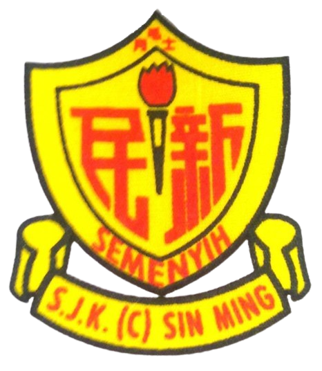
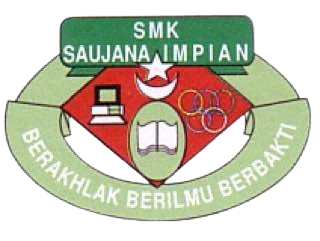

MY EDUCATION FOR THE PAST FEW YEARS 🎓
| My school | My experience |
|---|---|
|  | ❀ I went to SJK(C)Sin Ming from 2011 until 2016. My parents want me to master chinese since I was younger so that I get to communicate with other chinese people well and understand them better. ❀ I learn that studying a new language not only the language itself, but I also get to learn new and interesting culture that I never know nor learn about it. ❀ I also becoming more punctual on homework and be more discipline on time. ❀ Unfortunately, I somehow get bullied when I'm in standard 5 due to starting wearing hijab and also because I'm a muslim. Thankfully, I have my friends that backed me up even though we're not the same religion. ❀ For me, being in a chinese school is not a very easy since we have alot of pressure on academics from the teachers and the school, even the rules are quite strict. But when I started to relapse the memories, I actually had so much fun back then with my friends and I enjoy every moments that I had with them. |
|  | ♡ I went to SMK Saujana Impian also known as SMKSI from 2017 until 2021. Since my sister went to SMKSI after she graduated, my parents want me to go to the same school as her. ♡ Since I'm from other school, therefore it is quite hard for me to make a new friends since most of them already had their own group friends. ♡ It is very hard for me to adapt with malay school because I realize that the rules are not too strict like chinese schhol. Also, I had a hard time to understand some subject such as math and science since I learn them in chinese back then. ♡ I became a class assistant when I was 14, I took my responsibility very serious. I helped every teachers that in need. Sometimes I had to go back home a little late to help my teachers since I was a class assistant. Our class president didn't helped alot therefore, I had to do most of the job. ♡ I'm taking economic, business and account for my subject elective when I was 16. But I dropped out subject account after a year due to having a hard time to understand the subject. ♡ I got 1A, 3B+, 3B- and 1C+ for my SPM result. |
 |
⟡ Currently study at UiTM Cawangan Kedah since 2022 until now. This is my first time further my study far away from my family and home. I get homesick for a week after I get into the college. ⟡ To be honest, I never thought that I'll get into this course since I'm taking business course when I'm in high school. ⟡ Had a hard time to making new friends because none of friends study here. Thankfully, the friends that I have right now are such an angel. It is a blessing having them. ⟡ I get to learn alot of new knowledge. For instance, I get to learn how to coding, using adobe, and more. ⟡ I started to learn to stand outside of my comfort zone slowly, socialize with other people not only my friends. I also learn how to solve my own problems and making my own decision without having my parents beside me. Moreover, I learn to become more independant since my parents used to help me with everything. ⟡ Since I have one more semester to go until I graduate, I hope that I get to meet new people, and being able to join more programme to become an active students at UiTM Kedah. |